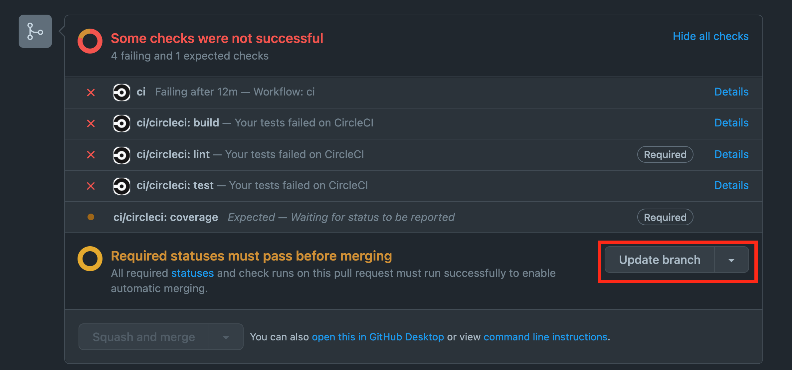
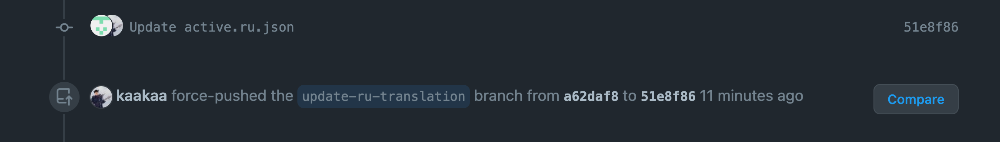

背景
CIが壊れてるときにPRをもらってしまい、CIがコケてCheckが通らずマージができないという事態。
CIを直すにはCIスクリプトの方を直す必要があったので、CIを直すPRを作ってマージ。そうすると、作ってもらったPRのブランチの方にも、CIスクリプトの修正を取り込んでもらわないといけない。
「お願い〜」と言ったけど、反応がない。まぁ、時間経っちゃったので仕方ない。
リリース作るためにマージはしちゃいたいんだけどどうしよう、というのが背景。
調査
mattermod
Mattermostのリポジトリだと、PRに/update-branchとコメントすることで自動でbaseブランチの変更を取り込んでくれるBotとか動いてたなぁということを思い出し、リポジトリを見に行ってみる。
コードを見ると、どうもgoogle/go-githubのUpdateBranchという関数を実行している模様。
_, resp, err := s.GithubClient.PullRequests.UpdateBranch(ctx, pr.RepoOwner, pr.RepoName, pr.Number, opt)
https://github.com/mattermost/mattermost-mattermod/blob/master/server/update_branch.go#L66
google/go-github
google/go-githubのgodocを見に行く。
https://pkg.go.dev/github.com/google/go-github/v45/github#PullRequestsService.UpdateBranch
GitHubのドキュメントへのリンクが貼ってある。
GitHub API ドキュメント
google/go-githubのgodocに載ってたドキュメントを見てみる。
https://docs.github.com/en/rest/pulls/pulls#update-a-pull-request-branch
それっぽいAPIはあるらしい。
でもAPI叩くのはなんか嫌なので、API名でググってみる。
GitHub ドキュメント
やはり画面から操作できる設定がある模様。 “Settings > Always suggest updating pull request branches“をONにすると、なんかやりたいことができるようになるっぽい。
Managing suggestions to update pull request branches - GitHub Docs
一応、設定名でもググって、やりたいことに沿っていそうか確かめる。
Productivity Weekly (2022-02-09号)
GitHub のプルリクエスト画面で base ブランチ[1]の最新のコミットを head ブランチ[2]に取り込む「Update branch」機能が rebase を選べるようになりました。これまでは merge しか選べなかったためマージコミットができてしまっていました。
実施
“Always suggest updating pull request branches“の設定を有効にしてみると、PullRequestのところにUpdate branchというボタンが生えている。

Update with rebaseの方を選んでUpdate branchを実行したところ、元のコミットのCo-authorとして自分が追加され、force pushされる模様。

Update with merge commitの方だと、自分によるマージコミットが作られるんだろうけど、どっちがいいんだろ。マージコミット作った方がわかりやすかった気がする。
おわりに
GitHubの設定が増えすぎて全然理解が追いついてない。